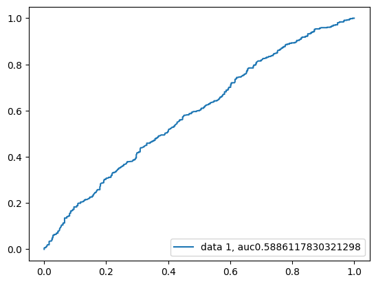
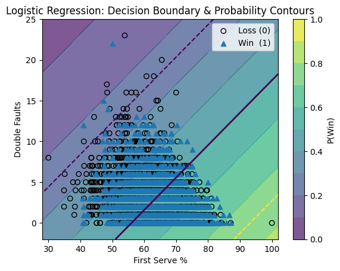
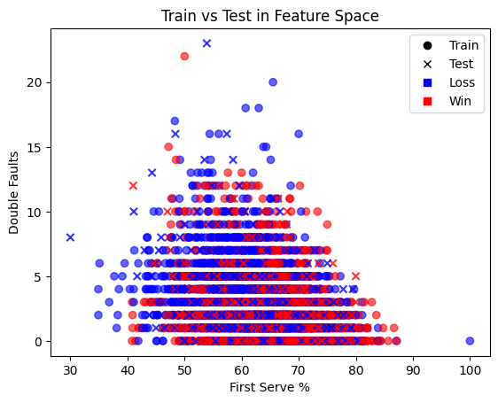
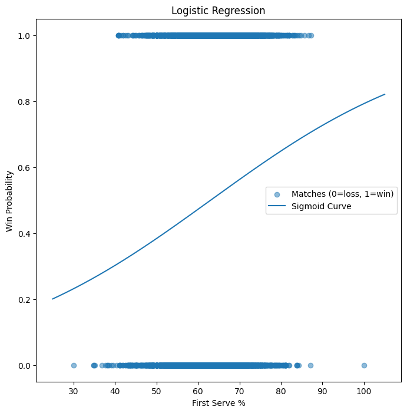
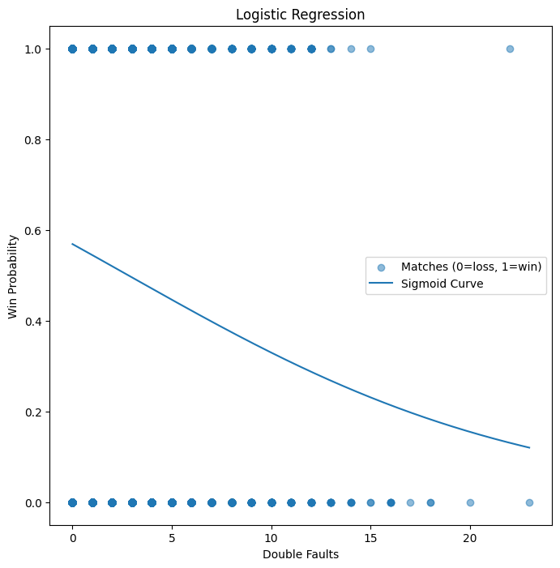

Tennis Match Outcome — Results Gallery
Generated 2025-09-13 13:30 • Static build
Visualizations
ROC CurveROC CurveDecision BoundaryFeature ScatterFirst-Serve SigmoidDouble-Fault Sigmoid
Classification Report
precision recall f1-score support
loss 0.56 0.49 0.52 562
win 0.55 0.61 0.58 562
accuracy 0.55 1124
macro avg 0.55 0.55 0.55 1124
weighted avg 0.55 0.55 0.55 1124